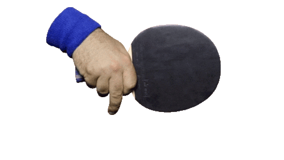
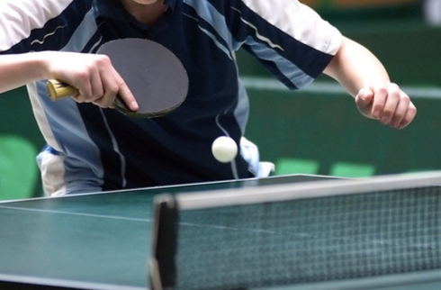

Style trzymania rakietki


W tenisie sto³owym istniej¹ trzy g³ówne style trzymania rakietki: kontynentalny, wschodni i penhold.
Chwyt kontynentalny: Trzymanie rakietki przypomina uchwyt m³otka. Jest to uniwersalny chwyt, który sprawdza siê zarówno przy uderzeniach forehandowych, jak i backhandowych. Umo¿liwia szybkie przejœcie miêdzy uderzeniami, ale mo¿e byæ mniej precyzyjny przy backhandzie.
Chwyt wschodni: Rakietka jest trzymana jak rakieta tenisowa, z d³oñmi skierowanymi w stronê forehandu. Pozwala to na wiêksz¹ kontrolê nad uderzeniami, szczególnie przy dynamicznej, ofensywnej grze.
Chwyt penhold (z ang. "d³ugopis"): Rakietka jest trzymana jak d³ugopis, co umo¿liwia bardzo precyzyjne uderzenia forehandowe i szybkie reakcje. Wad¹ tego chwytu jest trudniejszy backhand, który wymaga wiêkszej zrêcznoœci.
Ka¿dy z tych stylów ma swoje zalety i wady, a wybór zale¿y od preferencji i stylu gry gracza.
Do Nowego Roku zosta³o: